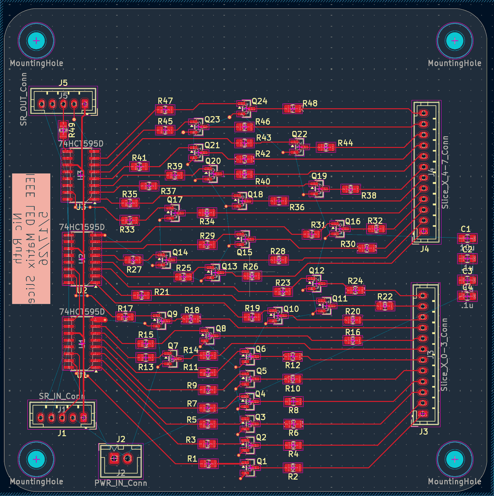
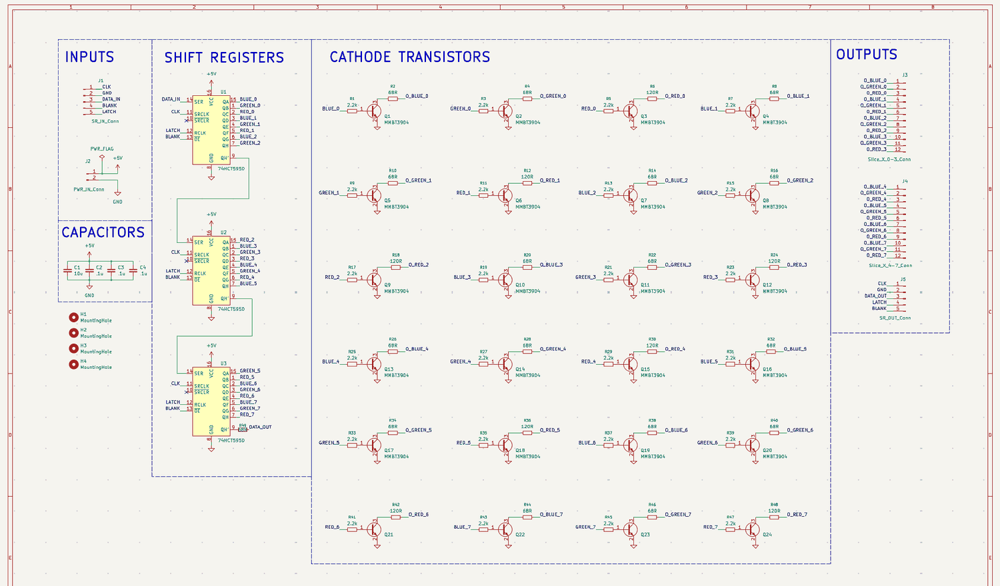

PCB Design · Digital · DU IEEE
IEEE LED Matrix Cube Board

- Role
- One slice of the chapter's LED matrix cube
- Drivers
- 3 × 74HCT595D shift registers, daisy-chained
- Channels
- 24 — eight columns × red, green, blue
- Switching
- MMBT3904 NPN low-side sinks, 2.2 kΩ base resistors
- Ballast
- 68 Ω on blue and green, 120 Ω on red
- Control bus
- Five wires — CLK, DATA, LATCH, BLANK, GND
- Tool
- KiCad
Eight RGB columns, five wires
An LED cube wants an enormous number of individually controlled outputs and a microcontroller has nowhere near enough pins. The way out is to stop treating brightness as something the processor drives directly and start treating it as data you clock in.
Three 74HCT595 shift registers sit in series. Each one takes serial
data on one pin and presents eight parallel outputs, so three of
them give 24 outputs — exactly eight columns of red, green, and
blue. The processor shifts 24 bits in on DATA and
CLK, pulses LATCH, and the whole slice
updates at once. Five wires in, twenty-four channels out.
The fifth signal, BLANK, drives the registers' active-low
output-enable pins together. Because it kills every output
simultaneously and independently of the data already latched, it
gives you a global brightness control: drive it with PWM and the
whole slice dims without touching a single bit of the frame.
Why red gets the bigger resistor
The shift register outputs can't sink enough current for an LED, so each of the 24 channels drives an MMBT3904 through a 2.2 kΩ base resistor and the transistor does the sinking. That part is mechanical. The ballast resistors are where a decision had to be made.
Blue and green LEDs drop roughly 3 V; red drops closer to 2 V. Hang all three off the same 5 V rail through the same resistor and the red channel gets far more current than the others — so the cube's “white” comes out pink, and the reds burn brighter and die sooner. Giving red 120 Ω where blue and green get 68 Ω pulls the three currents back into the same range, which is what keeps the colour mixing honest.
Built to chain
The board is one slice of a larger cube, so its five-pin output
header mirrors its input header exactly: the last register's
overflow output becomes the next slice's DATA, and
clock, latch, and blank pass straight through. Slices stack without
any change to the wiring, and the firmware just shifts in a longer
frame.
That overflow line leaves through a 68 Ω series resistor rather than a bare trace. It's a small thing, but the data line is the one signal that has to survive a ribbon cable between boards, and a series resistor there damps the reflections that fast CMOS edges produce on an unterminated run.

Designed with the University of Denver IEEE student chapter. This board is the layout for a single slice; the completed cube is the chapter's group project.